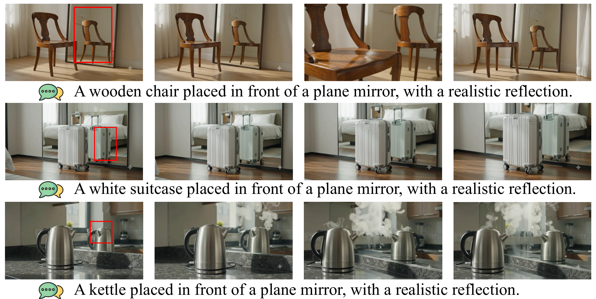
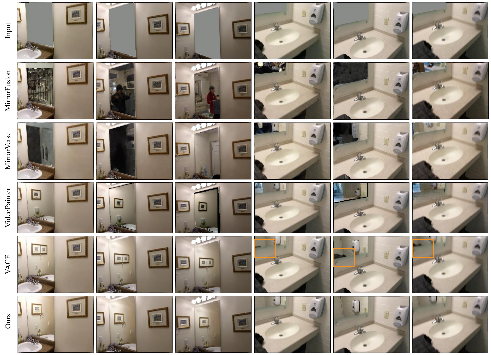

Video mirror reflection generation
MirrorWorld
Taming Video Diffusion Models for
Mirror Reflection Generation
1City University of Hong Kong 2Swansea University
A reflection-aware video inpainting framework that learns what the scene should reflect and how that content should be arranged inside the mirror.
The challenge
A mirror is not an empty canvas.
Its content is constrained by the visible world. Existing video diffusion models can synthesize a convincing room yet place the wrong object, person, or geometry inside its mirror. MirrorWorld explicitly models that scene-to-mirror relationship.

Abstract
Connecting the visible scene to its reflection.
Recent video diffusion models generate high-fidelity content, but mirror reflections remain challenging because the content inside a mirror must stay consistent with its surrounding scene. We introduce MirrorWorld, a reflection-aware video inpainting framework. Semantic Relation Distillation transfers relational information from a frozen visual foundation model to identify reflection-relevant scene content, while Geometric Transformation Alignment learns how that content should be spatially arranged. We also repurpose four video mirror datasets into a unified reflection reconstruction benchmark.
- 1,242
- video clips
- 4
- source datasets
- 14.005
- PSNR in mirrors
- 184.868
- FVD
Qualitative comparison
The same scene. A more faithful mirror.
All methods receive the same masked video, mirror mask, and text prompt.
Case 01 · Figure 2
Scene 0232
Case 02 · Figure 2
Scene 0084
More MirrorWorld results
Reflections across spaces, motion, and viewpoints.
Method
What to reflect.
How to reflect it.
Two complementary training objectives align the visible scene and mirror region. Auxiliary modules are used during training; inference retains the adapted video generator.

01 / What
Semantic Relation Distillation
A frozen VideoMAEv2 teacher transfers relational structure between tokens inside and outside the mirror. The diffusion model learns which visible content is relevant to the missing reflection.
Semantic association02 / How
Geometric Transformation Alignment
A transformation regressor uses a five-frame local temporal window to warp visible features toward the mirror region, guiding their spatial configuration over time.
Spatial arrangementBenchmark
A unified test for video mirror reconstruction.
We repurpose VMD-D, ZOOM, MMD, and DVMD-D into one reflection-aware reconstruction task, split at the source-video level.
1,142train clips
100test clips
≤49frames per clip
4datasets
Quantitative evaluation
Mirror-region reconstruction and video quality
Best results are highlighted. PSNR, SSIM, and LPIPS are computed inside mirror regions.
| Method | Type | PSNR ↑ | SSIM ↑ | LPIPS ↓ | FVD ↓ |
|---|---|---|---|---|---|
| MirrorFusion | Image | 9.508 | 0.293 | 0.699 | 513.062 |
| MirrorVerse | Image | 9.666 | 0.312 | 0.680 | 416.146 |
| VideoPainter | Video | 11.282 | 0.399 | 0.606 | 229.558 |
| VACE | Video | 13.537 | 0.489 | 0.493 | 191.617 |
| MirrorWorld Ours | Video | 14.005 | 0.504 | 0.488 | 184.868 |

Citation
BibTeX
BibTeX placeholder — final publication metadata will be added after release.
@article{mirrorworld2026,
title = {MirrorWorld: Taming Video Diffusion Models for Mirror Reflection Generation},
author = {Zhao, Youjun and Warren, Alex and Tam, Gary K. L. and Lau, Rynson W. H.},
journal = {arXiv preprint},
year = {2026},
note = {BibTeX placeholder; update with final publication metadata}
}